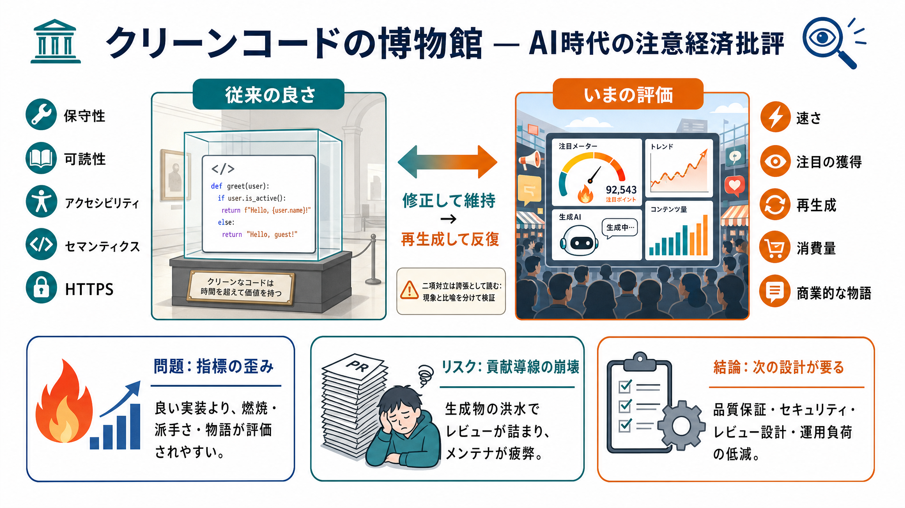

The Real Cost of Vibe Coding in 2026: What You Don't See Until It's Too Late
[Skip to content](https://hatchworks.com/blog/gendd/cost-of-vibe-coding/#content). * [What We Do](https://hatchworks.c…

「クリーンコードは博物館」を合図に、AI時代の開発・スタートアップ・注意経済を“反語”で見せる要約です。
（vibe文・誇張あり）事実ではなく“価値観の転換”を読む前提で整理します。
可読性・アクセシビリティ・セマンティクス・HTTPSのような“良い実装”が、生成と注目の前で軽く扱われる危機感があります。
悪いと言い切らず、長く保つ前提の世界観が崩れた—という形で、倫理ではなく“運用と制度”を責めます。
本文は軽量・高速、レスポンシブ、アクセシブル、セマンティック、HTTPS配信まで“完璧”を列挙します。
作者の本音は「コードを維持する」のではなく、「再生成して回す」方が勝ちやすくなった—という転換点にあります。
注意経済では「読まれない」静的・低複雑が不利になり、「派手さ」や“依存関係の肥大”が評価されやすい、という批判です。
二項対立に見える点は、誇張として読むのが安全です。
成果や証明より「燃焼（消費）」が数字として扱われると、意思決定がそこへ吸い寄せられる—という方向性を示します。
PRが“生成物の洪水”で埋まり、メンテナが燃え尽きると、ライセンスや貢献ガイドが形骸化しうると嘆きます。
批評をしながら、軽量で高速・アクセシブル・セマンティック・HTTPSという“昔の良さ”を実装しているのが、皮肉の核です。
断定が強いので、額面で信じず「どの部分は現象として起きるか」「どこは誇張か」を分けて読む必要があります。
この作品の価値は「技術の良し悪し」より「評価・運用・ビジネス設計」が技術を決める、という逆説にあります。
読後は「品質を担保する設計」と「貢献が回る運用」を別途組むこと—それが、この批評を実務に変える道です。
[Skip to content](https://hatchworks.com/blog/gendd/cost-of-vibe-coding/#content). * [What We Do](https://hatchworks.c…
This vibe coding trend will DOMINATE 2026 No Code MBA 42600 subscribers 54 likes 1806 views 30 Jan 2026 Vibe coding is e…
* [Cost Reports](https://www.van…
# The Agentic Coding Landscape in 2026: A Quick Guide | by Prusov Sergei | Medium. # The Agentic Coding Landscape in 202…
2026 Agentic Coding Trends Report How coding agents are reshaping software development Contents Foreword: From assistanc…